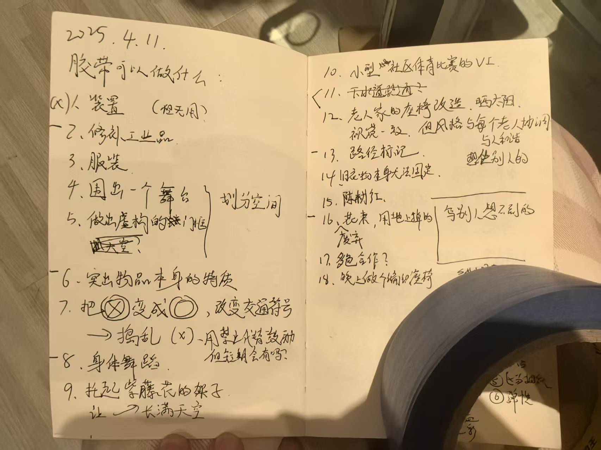

个人博客
我的思考与写作集合

在禅堂里，我遇见了所有人——记第二次内观禅修的结缘
2025-10-26关键词：威海, Vipassana, 哲思随笔, 海德格尔, 内观, 自我觉察, 见自己见天地见众生, 《蛋》The Egg

筑居思·算法：RSS——在信息迷雾中构建“认知绿洲”的艺术
2025-08-28关键词：工具推荐, 信息过载, 算法, RSS, 信息自主, 认知绿洲, 知识管理, 反算法

创造性思维
2025-05-03关键词：设计, 反思, 生活, 创造性, 思维, 创造, 创造力, 提升

筑居思·实践：或许设计实验就是容易失败，对吗？
2025-04-17关键词：社区营造, 失败, mapping, 实践, 布道者, 深刻反思, 实验艺术, 建筑

筑居思：37岁，我终于学会了"安心去玩"
2025-11-14关键词：37岁, 安心去玩, 工作生活平衡, 自我成长, 内心自由
筑居思·修行：我24岁学到的“灵魂自洽”SOP
2024-11-30关键词：自我成长, 哲思随笔, 休耕, 人间烟火气, 24岁, 独处, 灵魂自洽, 禅修

半载观想小记：在大理、在内观禅修的路上
2024-07-06关键词：内观, 禅修, Vipassana
筑居思·成长：“π型人才”的“终身学习”蓝图
2023-01-15关键词：newsletter, 自我成长, 终身学习者, 人生七年, 跨越式成长, 哲思随笔, 生活哲学家, T型人才
筑居思·算法：重构“决策”的38个灵魂拷问
2022-11-26关键词：newsletter, 自我成长, Basecamp, 算法, 工具箱, 创业, 决策, 项飚

筑居思·哲思：你是在“过生活”，还是在“计划你的传记”？
2022-11-15关键词：newsletter, 秘书问题, 自我成长, IF-THEN规划, 方法论, 哲思随笔, Scott H Young, 活在当下
筑居思·Vibe：我的人文、科技与“白日梦”
2022-11-08关键词：newsletter, 科技, 城市漫游, 白日梦, 何志森, 一席, 《心灵奇旅》, 想象力

筑居思·哲思：我无法用别人的答案，回应我的人生
2022-10-02关键词：哲思随笔, 灵魂独白, 建筑, 无力感, 活在当下, 理想主义, 自我认知, Hello World

筑居思·哲思：以人文主义为烛光，对抗灵魂的“熵增”
2022-09-17关键词：newsletter, 布道者, 哲思随笔, 熵增, 当下的启蒙, 《月亮与六便士》, 知识, 《活出生命的意义》
筑居思：我从KK的103条忠告中，重构了我的“人生算法”
2022-09-03关键词：自我成长, 1/3探索法则, 刻意练习, 荣格, 哲思随笔, 凯文·凯利, 人格面具, 倾听身体

筑居思·刊物 (No.01)：我的“心流”工具箱与“效率”实验
2022-08-27关键词：newsletter, 心流, Obsidian, 哲思随笔, 知识管理, Study-Work-Life Balance, 效率, 正念

筑居思·算法：一个“蛰伏”者的“阅读顺序”
2022-08-21关键词：价值观, newsletter, 自我成长, 积沙成塔, 桃花源, 阅读, 哲思随笔, 蛰伏

筑居思·缘起：我的思想启蒙与“灵魂栖居”
2022-07-22关键词：栖居, 缘起, 筑·居·思, 西村大院, 建筑, 慢下来, 发刊词, 海德格尔